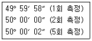
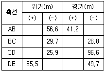
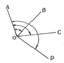
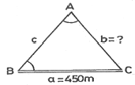
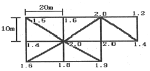
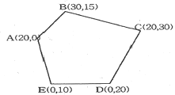
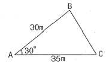
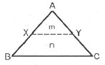

측량기능사 (2011-10-09 기출문제)
1과목: 임의 구분
1. 경중률에 대한 설명으로 옳지 않은 것은?
- 경중률은 관측횟수에 비례 한다.
- 경중률은 관측 온도에 반비례 한다.
- 경중률은 거리에 반비례 한다.
- 경중률은 표준편차의 제곱에 반비례 한다.
(정답률: 72%)

2. 어느 거리를 관측하여 48.18m, 48.12m, 48.15m, 48.25m의 관측값을 얻었고 이들의 경중률이 각각 1, 1, 2, 4라고 할 때 최확값은?
- 48.12m
- 48.17m
- 48.20m
- 48.24m
(정답률: 73%)
3. 하나의 각을 측정 횟수가 다르게 측정하여 아래와 같은 값을 얻었다면 최확값은?

- 49° 59‘ 59“
- 50° 00‘ 00“
- 50° 00‘ 01“
- 50° 00‘ 02“
(정답률: 60%)
4. 수준측량에 관한 용어의 설명으로 틀린 것은?
- 연직선이란 지표면의 어느 점으로부터 지구 중심에 이르는 선이다.
- 지평선이란 연직선에 직교하는 직선이다.
- 기준면은 일반적으로 여러 해 동안 관측한 평균 해수면을 사용한다.
- 기준면에서부터 어떤 점까지의 수평거리를 표고라 한다.
(정답률: 51%)
5. 트래버스 선점시 유의사항으로 틀린것은?
- 후속 측량이 편리하도록 한다.
- 측선의 거리는 가능한 짧게 한다.
- 지반이 견고한 장소에 설치한다.
- 측점 수는 될 수 있는 대로 적게 한다.
(정답률: 70%)
6. 일정한 경사지에서 A, B 두 점 간의 경사거리를 잰 결과 100m 이었다. AB간의 고저차가 20m 이었다면 수평거리는?
- 93.89m
- 93.98m
- 97.89m
- 97.98m
(정답률: 49%)
7. 각측량에서 기계오차에 해당되지 않는 것은?
- 수평축 오차
- 편심 오차
- 시준 오차
- 연직축 오차
(정답률: 70%)
8. 전진법에 의한 평판측량에서 폐합오차의 일반적인 허용 범위는 도상 몇 mm 이내 인가? (단, N : 변의 수 )
- ±0.1√N
- ±0.3√N
- ±0.6√N
- ±0.8√N
(정답률: 72%)
9. 삼각망의 조정 계산에 필요한 3가지 조건이 아닌 것은?
- 측점 조건
- 지형 조건
- 각 조건
- 변 조건
(정답률: 81%)
10. 수준측량에서 특별기준면에 대한 설명으로 관계가 먼 것은?
- 내륙에서 멀리 떨어진 섬 특유의 수준측량 기준이다.
- 하천의 강조부에서 표고의 불편함으로 인해 수준측량에 편리한 기준을 정한 면이다.
- 항만 또는 해안공사에서 해저표고로 인한 불편을 해소하기 위해 정한 기준면이다.
- 경제특구와 같은 경제적 특수성을 갖는 지역의 개발을 위한 기준면이다.
(정답률: 66%)
11. 삼각망 기선의 확대에 대한 설명 중 옳지 않은 것은?
- 소규모 삼각측량에서는 삼각망의 변장을 기선으로 함이 좋다.
- 1회의 기선 확대는 기선길이의 3배 정도로 한다.
- 기선 확대의 횟수는 2회 정도로 한정한다.
- 최종 확대 변은 기선길이의 20배 이내로 한다.
(정답률: 55%)
12. 수준측량에서 우연오차에 해당되는 것은?
- 구차에 의한 오차
- 시준할 때 기포가 중앙에 잇지 않음에 의한 오차
- 수시로 발생되는 기상변화에 의한 오차
- 표척이음매 부분의 마모에 의한 오차
(정답률: 62%)
13. 트래버스의 계산에 대한 설명으로 옳은 것은?
- 폐합 트래버스의 편각의 총합은 720°이다.
- 방위각이 92°인 측선의 역방위각은 272°이다.
- 폐합 트래버스인 n다각형의 내각의 합은 (n-3)×180°이다.
- 방위각 계산에서 (-)각이 생기면 180°를 더해 주어야 한다.
(정답률: 59%)
14. 평판을 세울 때 발생 되는 오차가 아닌 것은?
- 중심맞추기 오차
- 방향맞추기 오차
- 방사맞추기 오차
- 수평맞추기 오차
(정답률: 74%)
15. 기계에서 30m 떨어진 곳에 표척을 세워 기포가 4눈금 이동되었을 때 표척의 읽음값 차가 0.024m를 얻었다. 이 때 수준기의 감도는 얼마인가?
- 21“
- 31“
- 41“
- 51“
(정답률: 45%)
16. 트래버스 측량에서 다음 결과를 얻었을 때 측선 EA의 거리는? (단, 폐합이며 오차는 없음)

- 134.6m
- 143.6m
- 154.4m
- 153.5m
(정답률: 46%)
17. 1등 삼각측량을 할 때 수평각 측정시 사용하는 수평각 관측방법은?
- 단측법
- 배각법
- 방향각법
- 조합각 관측법
(정답률: 72%)
18. 두 점간의 거리와 방위각을 알고 있을 경우 위거와 경거를 구하는 공식으로 옳은 것은? (단, 두 점간의 거리 : ℓ, 방위각 : α)
- 위거 = ℓ sin α, 경거 = ℓ cos α
- 위거 = ℓ sin α, 경거 = ℓ tan α
- 위거 = ℓ tan α, 경거 = ℓ cos α
- 위거 = ℓ cos α, 경거 = ℓ sin α
(정답률: 70%)
19. 지구반지름 R=6370km라 할 때 평면측량에서 거리의 허용오차를 1/1000000지 허용한다면 지구를 평면으로 볼 수 있는 한계는 몇 km 인가?
- 13km
- 16km
- 22km
- 27km
(정답률: 61%)
20. 삼각측량의 작업순서가 옳은 것은?
- 답사 및 선점→조표→관측→계산
- 답사 및 선점→관측→조표→계산
- 조표→답사 및 선점→관측→계산
- 조표→관측→답사 및 선점→계산
(정답률: 77%)
2과목: 임의 구분
21. 625m 측선의 우연오차가 ±20mm 이었다면 같은 정도로 측정한 25m 측선의 우연오차는 몇 mm 인가?
- ±2mm
- ±4mm
- ±8mm
- ±12mm
(정답률: 51%)
22. 어느 측점에서 데오드라이트를 설치하여 A, B 두 지점을 3배각으로 관측한 결과, 정위 126° 12‘ 36“, 반위 126° 12’ 12”를 얻었다면 두 지점의 내각은 얼마인가?
- 126° 12‘ 24“
- 63° 06‘ 12“
- 42° 04‘ 08“
- 31° 33‘ 06“
(정답률: 41%)
23. 교호수준측량으로 소거되는 오차가 아닌 것은?
- 레벨의 시준측 오차
- 지구의 곡률에 의한 오차
- 광선의 굴절에 의한 오차
- 수준척이 연직이 아닐 때 발생하는 오차
(정답률: 50%)
24. 평판측량의 방법과 관계가 없는 것은?
- 전진법
- 방사법
- 교회법
- 종거법
(정답률: 78%)
25. 사변형 삼각망 변조정에서 Σlog sin A = 39.2434474, Σlog sin B = 39.2433974이고, 표차 총합이 1997.7일 때 변조정량의 크기는?
- 1.9“
- 2.5“
- 3.1“
- 3.5“
(정답률: 45%)
26. 수평각 관측방법 중 그림과 같이 측정하는 방법은?

- 방향각법
- 방위각법
- 배각법
- 단각법
(정답률: 73%)
27. 방위각 247° 20‘ 40“를 방위로 표시한 것으로 옳은 것은?
- N 67° 20' 40" W
- S 22° 39' 20" W
- S 67° 20' 40" W
- N 22° 39' 20" W
(정답률: 77%)
28. 폐합 트래버스의 위거오차 0.1m, 경거오차 0.2m이고 총거리가 1500m일 때, 허용 폐합비가 1:5000 이라면 어떻게 처리해야 하는가?
- 거리를 채측한다.
- 각도를 재측한다.
- 그대로 조정하여 사용한다.
- 거리와 각도를 재측한다.
(정답률: 55%)
29. 삼각측량에서 기선 a=450m 일 때 변 b의 길이는? (단, ∠A=60° 3' 44", ∠B=56° 24' 22")

- 432.558m
- 519.290m
- 540.229m
- 663.988m
(정답률: 46%)
30. 50m에 대해 3mm가 긴 테이프로 토지를 측량하였더니 그 넓이가 10000m2이었다면 실제 넓이는?
- 10002.1m2
- 10001.9m2
- 10001.6m2
- 10001.2m2
(정답률: 43%)
31. 트래버스 측량의 용도와 가장 거리가 먼 것은?
- 경계 측량
- 노선 측량
- 종ㆍ횡단 수준 측량
- 지적 측량
(정답률: 63%)
32. 조정이 불완전한 레벨로 수준측량을 할 경우 오차 소거방법으로 알맞은 것은?
- 표척을 수직으로 세우고 시차를 없앤다.
- 시준거리를 길게 한다.
- 2회 이상 측정하여 평균값을 취한다.
- 전시와 후시의 거리를 같게 한다.
(정답률: 63%)
33. 트래버스 측량시 방위각은 무엇을 기준으로 하여 시계방향으로 측정된 각인가?
- 진북 자오선
- 도북선
- 앞 측선
- 뒷 측선
(정답률: 88%)
34. 결합 트래버스 측량에서 각 측정의 경중률이 같은 경우에 수평각 오차를 배분하는 방법으로 옳은 것은? (단, 오차는 허용 범위 내에 있음)
- 각의 크기에 상관없이 동일하게 배분한다.
- 측선의 길이에 비례하여 배분한다.
- 측선의 길이의 역수에 비례하여 배분한다.
- 각의 크기에 비례하여 배분한다.
(정답률: 43%)
35. 수준측량의 야장 기입 방법중 기고식에 대한 설명으로 옳은 것은?
- 기계고를 구하여 이 기계고에서 표고를 알고자 하는 점의 전시를 빼 주어 표고를 얻는 방법이다.
- 후시에서 전시를 빼어 그 값의 (+), (-)를 승, 강의 난에 기입하는 방법이다.
- 가장 간단한 방법으로 두 점 사이의 표고차만을 구하는 것이 주목적이다.
- 중간점이 많은 수준측량의 경우에는 계산이 복잡해지는 단점이 있다.
(정답률: 55%)
36. 그림과 같은 지역을 삼분법에 의하여 구한 토공량은? (단, 각 분할된 구역의 크기는 동일하다.)

- 1787m3
- 2453m3
- 1087m3
- 2653m3
(정답률: 40%)
37. 지형측량의 방법 중 골조측량과 거리가 먼 것은?
- 시거 측량
- 고저 측량
- 트래버스 측량
- 삼각 측량
(정답률: 51%)
38. 기점으로부터 교정까지 추가거리가 432.4m 이고, 교각이 54° 12‘ 일 때 외할(E)은? (단, 곡선반지름은 300m 이다.)
- 37.0m
- 34.9m
- 30.0m
- 29.9m
(정답률: 31%)
39. 단곡선 설치에서 반지름이 150m, 교각이 57° 36‘ 일 때 곡선장은?
- 130.52m
- 140.52m
- 150.80m
- 160.28m
(정답률: 48%)
40. 지형도의 등경사지에서 A점의 표고 37.65m, B점의 표고 53.26m, AB간의 도상 수평거리 68.5m일 경우, 표고 40m 지점을 표시할 때 A점으로부터의 수평거리는?
- 9.3m
- 10.3m
- 11.3m
- 58.2m
(정답률: 45%)
3과목: 임의 구분
41. 노선 측량에서 노선 선정시 유의해야 할 사항으로 틀린 것은?
- 노선은 가능한 직선으로 하고 경사를 완만하게 한다.
- 토공량이 많고 절토가 많은 것이 좋다.
- 절토 및 성토의 운반 거리를 가급적 짧게 한다.
- 배수가 잘 되는 곳이어야 한다.
(정답률: 78%)
42. 완화 곡선의 종류가 아닌 것은?
- 3차 포물선
- 클로소이드 곡선
- 렘니스케이트 곡선
- 머리핀 곡선
(정답률: 83%)
43. 그림 같은 트래버스에서 각 측점의 좌표를 보고 좌표법으로 구한 면적은? (단, 단위는 m임)

- 330m2
- 550m2
- 660m2
- 1100m2
(정답률: 49%)
44. 다음 중 GPS 구성요소가 아닌 것은?
- 사용자 부분
- 우주부분
- 제어부분
- 천문부분
(정답률: 77%)
45. 체적 계산 방법 중 전체 구역을 직사각형이나 삼각형으로 나누어서 토량을 계산하는 방법은?
- 점고법
- 단면법
- 좌표법
- 배횡거법
(정답률: 57%)
46. 등고선의 종류 중 표고의 읽음을 쉽게 하기 위해서 곡선 5개마다 1개의 굵은 실선으로 표시하는 등고선은?
- 간곡선
- 주곡선
- 조곡선
- 계곡선
(정답률: 65%)
47. 지형도 작성을 위한 계획단계에서 검토해야 할 사항이 아닌 것은?
- 목적에 적합한 측량범위, 축척, 측량 정확도를 정한다.
- 측량을 하기 위하여 답사와 선점을 하여야 한다.
- 작업기간에 따른 측량 작업 인원, 사용 장비 등을 계획 한다.
- 지형도 작성을 위해 이용 가능한 자료를 수집한다.
(정답률: 49%)
48. 그림과 같은 삼각형의 면적은 얼마인가?

- 262.5m2
- 272.5m2
- 454.7m2
- 525.0m2
(정답률: 49%)
49. 그림과 같이 토지의 한변 BC에 평행하게 m:n=1:3의 면적비율로 분할할 때 AB=30m이면 AX의 길이는?

- 5m
- 10m
- 15m
- 20m
(정답률: 49%)
50. 지형의 표시방법에 대한 설명으로 틀린 것은?
- 음영법 - 지형이 높을수록 색을 진하게, 낮아질수록 연하게 채색의 농도를 변화시켜 표현한다.
- 우모법 - 영선법이라고도 하며, 기복은 쉽게 이해되나 제도하기가 어렵다.
- 점고법 - 해도, 하천, 호수, 항만의 수심을 나타내는 경우에 사용된다.
- 등고선법 - 지표면의 완경사, 급경사도 알 수 있으므로 건설공사용에 많이 사용한다.
(정답률: 65%)
51. 단곡선 설치에서 곡선의 시점(B.C)까지의 추가 거리가 450.25m이었을 때 시단현(ℓ1)의 길이는?
- 0.25m
- 9.75m
- 10.25m
- 19.75m
(정답률: 34%)
52. 지형측량에서 등고선 간격이란 등고선 사이의 어떤 거리를 의미하는가?
- 수직 거리
- 수평 거리
- 경사 거리
- 평면 거리
(정답률: 56%)
53. 양단면의 면적이 A1=20m2, A2=40m2, 두 단면 사이의 거리가 L=25일 때, 거리 L의 중간점에서의 단면적이 Am=30m2이었다면 각주공식에 의한 체적은?
- 740m3
- 750m3
- 760m3
- 770m3
(정답률: 63%)
54. 캔트(cant)에 대한 설명으로 틀린 것은?
- 레일 간격에 비례한다.
- 설계 속도의 제곱에 비례한다.
- 곡선 반지름에 반비례한다.
- 중력 가속도에 비례한다.
(정답률: 55%)
55. 단곡선 설치 방법이 아닌 것은?
- 편각법
- 중앙 종거법
- 지거법
- 컴퍼스법
(정답률: 61%)
56. GPS 측량에서 위성 궤도의 고도는 약 몇 km 인가?
- 40400km
- 30300km
- 20200km
- 10100km
(정답률: 79%)
57. GPS 수신기 오차에서 수신기 채널 잡음의 해결 방법으로 가장 알맞은 것은?
- 높은 건물에 근접하여 관측한다.
- 배터리를 교체한다.
- 검증과정을 통해 보정 하거나 수신기의 노후에 의한 것일 때는 교체한다.
- 수신 위성의 수를 1대로 최소화 한다.
(정답률: 75%)
58. 축척 1:25000의 지형도에서 계곡선의 간격은?
- 5m
- 10m
- 50m
- 100m
(정답률: 52%)
59. 노선 측량의 순서로 옳은 것은?
- 예측 → 도상 계획 → 실측 → 공사 측량
- 도상 계획 → 실측 → 예측 → 공사 측량
- 도상 계획 → 예측 → 실측 → 공사 측량
- 실측 → 도상 계획 → 예측 → 공사 측량
(정답률: 82%)
60. GPS의 일반적 특징에 대한 설명으로 틀린 것은?
- 기상에 관계없이 위치 결정이 가능하다.
- 하루 24시간 어느 시간에서나 이용이 가능하다.
- 3차원 측량을 동시에 할 수 있다.
- 사용 가능한 공간적 제약으로 극지방에서는 이용할 수 없다.
(정답률: 86%)